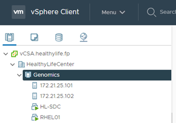
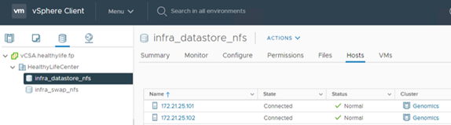

문서 변경 요청
문서 변경 요청 이 페이지 편집
이 페이지 편집 기여하는 방법 자세히 알아보기
기여하는 방법 자세히 알아보기유전체학 - GATK 설정 및 실행
기여자
국립인간게놈연구소( "NHGRI"), “유전체학(Genomics)은 이러한 유전자의 상호 작용 및 인간 환경의 상호 작용을 포함하여 사람의 모든 유전자(게놈)를 연구하는 학문을 말합니다. ”
에 따르면 "NHGRI"“디옥시리보핵산(DNA)은 거의 모든 생물의 활동을 개발하고 지시하는 데 필요한 지침이 들어 있는 화학 화합물입니다. DNA 분자는 2개의 꼬임, 쌍을 이룬 가닥으로 만들어졌으며, 종종 이중 나선이라고 합니다.” “유기체의 전체 DNA 세트를 게놈(genome)이라고 합니다.”
염기서열분석은 DNA 가닥에서 베이스의 정확한 순서를 결정하는 프로세스입니다. 오늘날 사용되는 가장 일반적인 염기서열분석 유형 중 하나는 합성에 의한 시퀀싱입니다. 이 기술은 형광 신호를 방출하여 베이스를 정렬합니다. 연구자들은 DNA 염기서열분석을 사용하여 유전적 변이와 사람이 아직 배아 단계에 있는 동안 질병의 발육이나 진행에 영향을 줄 수 있는 돌연변이를 검색할 수 있습니다.
시료에서 변형 식별, 주석 및 예측에 이르기까지
유전체학을 다음 단계로 분류할 수 있습니다. 전체 목록은 아닙니다.
다음 그림은 샘플링에서 변형 식별, 주석 및 예측에 이르는 프로세스를 보여 줍니다.

인간 게놈 프로젝트는 2003년 4월에 완료되었으며 이 프로젝트는 공용 도메인에서 사용할 수 있는 인간 게놈 염기서열의 고품질 시뮬레이션을 만들었습니다. 이 참조 게놈은 게놈 분야의 연구 및 개발 분야에서 폭발적으로 성장하였습니다. 거의 모든 인간 질병에는 인간의 유전자에 대한 서명이 있습니다. 최근까지 의사들은 겸상 적혈구 빈혈(Sickle cell anaemia)과 같은 선천성 기형을 예측하여 결정하기 위해 유전자를 활용하고 있었다. 이는 단일 유전자의 변화로 인한 특정 상속 패턴으로 인해 발생한다. 인간 게놈 프로젝트에서 사용 가능한 데이터의 보화가 유전체학 능력의 출현으로 이어졌습니다.
유전체학은 다양한 이점을 제공합니다. 다음은 의료 및 생명 과학 분야에서 얻을 수 있는 다양한 이점입니다.
-
치료 시점의 진단 향상
-
예후가 양호하다
-
정밀 의학
-
맞춤형 치료 계획
-
질병 모니터링 개선
-
부작용 사고 감소
-
치료법 이용 향상
-
질병 모니터링 개선
-
유전자형을 기반으로 한 임상 시험에 대한 효과적인 임상 시험 참여 및 더 나은 환자 선택.
유전체학은 입니다 "십자형 괴수," 데이터 세트의 라이프사이클 전반에서 컴퓨팅 수요가 그 이유는 수집, 스토리지, 배포, 분석 때문입니다.
게놈 분석 툴킷(GATK)
GATK는 에서 데이터 과학 플랫폼으로 개발되었습니다 "Broad Institute(광범위한 기관". GATK는 게놈 분석, 특히 변형 발견, 식별, 주석 및 유전형 분석을 지원하는 오픈 소스 도구 세트입니다. GATK의 장점 중 하나는 도구 및 또는 명령 집합을 연결하여 완전한 워크플로를 만들 수 있다는 것입니다. 광범위한 연구소가 직면한 주요 과제는 다음과 같습니다.
-
질병의 근본 원인과 생물학적 메커니즘을 이해합니다.
-
질환의 근본 원인에 작용하는 치료 중재술을 파악합니다.
-
인체 생리학에서 변이형(variant)에서 기능까지 가시선을 이해합니다.
-
표준 및 정책 생성 "프레임워크" 게놈 데이터 표현, 스토리지, 분석, 보안 등에 사용됩니다.
-
상호 운용 가능한 게놈 집계 데이터베이스(gnomAD)를 표준화하고 계층화합니다.
-
정밀도가 높은 환자의 게놈 기반 모니터링, 진단 및 치료
-
증상이 나타나기 훨씬 전에 질병을 예측하는 도구를 구현하는 데 도움을 줍니다.
-
여러 분야의 공동 협력자들을 만들고 역량을 강화하여 바이오메딘에서 가장 까다롭고 중요한 문제를 해결할 수 있도록 지원합니다.
GATK 및 광학원에 따르면 게놈 시퀀싱은 병리학 검사실에서 프로토콜로 취급해야 합니다. 모든 작업은 시료 및 실험 전반에서 잘 문서화되고 최적화되고 재현 가능하며 일관성이 있습니다. 다음은 Broad Institute에서 권장하는 단계 집합입니다. 자세한 내용은 을 참조하십시오 "GATK 웹 사이트".
FlexPod 설정
유전체학 워크로드 검증에는 FlexPod 인프라 플랫폼의 처음부터 새로 설치가 포함됩니다. FlexPod 플랫폼은 가용성이 높으며 독립적으로 확장할 수 있습니다. 예를 들어, 네트워크, 스토리지 및 컴퓨팅을 독립적으로 확장할 수 있습니다. FlexPod 환경을 설정하기 위해 다음 Cisco Validated Design Guide를 참조 아키텍처 문서로 사용했습니다. "VMware vSphere 7.0 및 NetApp ONTAP 9.7을 사용하는 FlexPod 데이터 센터". 다음 FlexPod 플랫폼 설정 하이라이트를 참조하십시오.
FlexPod 랩 설정을 수행하려면 다음 단계를 완료하십시오.
-
FlexPod 랩 설정 및 검증에서는 다음과 같은 IP4 예약 및 VLAN을 사용합니다.

-
ONTAP SVM에서 iSCSI 기반 부팅 LUN을 구성합니다.

-
LUN을 iSCSI 이니시에이터 그룹에 매핑합니다.


-
iSCSI 부트를 사용하여 vSphere 7.0을 설치합니다.
-
vCenter에 ESXi 호스트를 등록합니다.

-
ONTAP 스토리지에서 NFS 데이터 저장소 'infra_datastore_nfs’를 프로비저닝합니다.

-
vCenter에 데이터 저장소를 추가합니다.

-
vCenter를 사용하여 ESXi 호스트에 NFS 데이터 저장소를 추가합니다.

-
vCenter를 사용하여 RHEL(Red Hat Enterprise Linux) 8.3 VM을 생성하여 GATK를 실행합니다.
-
NFS 데이터 저장소는 VM에 제공되며 GATK 실행 파일, 스크립트, BAM(Binary Alignment Map) 파일, 참조 파일, 인덱스 파일, 사전 파일 및 variant Calling용 아웃 파일을 저장하는 데 사용되는 "/mnt/geninary"에 마운트됩니다.

GATK 설정 및 실행
RedHat Enterprise 8.3 Linux VM에 다음 필수 구성 요소를 설치합니다.
-
Java 8 또는 SDK 1.8 이상
-
Broad Institute에서 GATK 4.2.0.0 다운로드 "GitHub 사이트". 게놈 시퀀스 데이터는 일반적으로 탭으로 구분된 ASCII 열 형태로 저장됩니다. 그러나 ASCII에서는 저장할 공간이 너무 많이 필요합니다. 따라서 BAM(\ .BAM) 파일이라는 새로운 표준이 발전했습니다. BAM 파일은 시퀀스 데이터를 압축, 인덱싱 및 바이너리 형식으로 저장합니다. 저희가 "다운로드되었습니다" 에서 GATK 실행을 위해 공개적으로 사용할 수 있는 BAM 파일 집합 "공용 도메인입니다". 또한 인덱스 파일(\.dai), 사전 파일(*)도 다운로드했습니다. 참조 데이터 파일(*. fasta) 동일한 공용 도메인에서.
다운로드 후 GATK 도구 키트에는 JAR 파일과 지원 스크립트 세트가 있습니다.
-
GATK-PACKAGE-4.2.0.0-LOCAL.JAR 실행 파일
-
GATK 스크립트 파일.
BAM 파일과 해당 인덱스, 사전 및 참조 게놈 파일을 아버지, 어머니, 아들 *.BAM 파일로 구성된 제품군에 다운로드했습니다.
크롬웰 엔진
Cromwell은 워크플로우 관리를 지원하는 과학적 워크플로우에 맞춰 설계된 오픈 소스 엔진입니다. 크렘웰 엔진은 2개로 작동할 수 있습니다 "모드", 서버 모드 또는 단일 워크플로 실행 모드. 크롬웰 엔진의 동작은 를 사용하여 제어할 수 있습니다 "Cromwell 엔진 구성 파일".
당사는 크롬웰 엔진을 사용하여 워크플로우 및 파이프라인을 대규모로 실행합니다. 크롬웰 엔진은 사용자 친화적인 엔진을 사용합니다 "워크플로 설명 언어" (WDL) 기반 스크립팅 언어입니다. Cromwell은 CWL(Common Workflow Language)이라는 두 번째 워크플로 스크립팅 표준도 지원합니다. 이 기술 보고서를 통해 WDL을 사용했습니다. WDL은 원래 Broad Institute for 게놈 분석 파이프라인에 의해 개발되었습니다. WDL 워크플로를 사용하려면 다음을 비롯한 몇 가지 전략을 사용할 수 있습니다.
-
* 선형 체인 * 이름에서 알 수 있듯이 작업 #1의 출력은 작업 #2에 입력으로 전송됩니다.
-
* 다중 입력/출력. * 각 작업은 후속 작업에 대한 입력으로 여러 출력을 보낼 수 있다는 점에서 선형 연쇄와 유사합니다.
-
* Scatter-Gather. * 이 전략은 이벤트 중심 아키텍처에서 특히 사용되는 가장 강력한 EAI(엔터프라이즈 애플리케이션 통합) 전략 중 하나입니다. 각 작업은 분리된 방식으로 실행되며 각 작업의 출력은 최종 출력으로 통합됩니다.
WDL을 사용하여 독립 실행형 모드에서 GATK를 실행하는 경우 다음 3단계가 있습니다.
-
'womtool.jar’를 사용하여 구문을 검증합니다.
[root@genomics1 ~]# java -jar womtool.jar validate ghplo.wdl
-
입력 JSON을 생성합니다.
[root@genomics1 ~]# java -jar womtool.jar inputs ghplo.wdl > ghplo.json
-
크롬웰 엔진과 크롬웰.jar로 워크플로우를 실행합니다.
[root@genomics1 ~]# java -jar cromwell.jar run ghplo.wdl –-inputs ghplo.json
GATK는 여러 가지 방법으로 실행할 수 있습니다. 이 문서에서는 이러한 세 가지 방법을 설명합니다.
JAR 파일을 사용하여 GATK 실행
hplotype variant 호출자를 사용하여 단일 variant 호출 파이프라인 실행을 살펴보겠습니다.
[root@genomics1 ~]# java -Dsamjdk.use_async_io_read_samtools=false \ -Dsamjdk.use_async_io_write_samtools=true \ -Dsamjdk.use_async_io_write_tribble=false \ -Dsamjdk.compression_level=2 \ -jar /mnt/genomics/GATK/gatk-4.2.0.0/gatk-package-4.2.0.0-local.jar \ HaplotypeCaller \ --input /mnt/genomics/GATK/TEST\ DATA/bam/workshop_1906_2-germline_bams_father.bam \ --output workshop_1906_2-germline_bams_father.validation.vcf \ --reference /mnt/genomics/GATK/TEST\ DATA/ref/workshop_1906_2-germline_ref_ref.fasta
이 실행 방법에서는 GATK 로컬 실행 jar 파일을 사용하고, 단일 Java 명령을 사용하여 jar 파일을 호출하고, 명령에 여러 매개 변수를 전달합니다.
-
이 매개변수는 우리가 'HaplotypeCaller' 변종 호출자 파이프라인을 호출한다는 것을 나타냅니다.
-
'--input’은 입력 BAM 파일을 지정합니다.
-
'--output’은 variant 호 형식(*.vcf)으로 variant 출력 파일을 지정한다. ("참조")를 클릭합니다.
-
참조 매개 변수를 사용하여 기준 게놈을 전달합니다.
실행 후 출력 상세 정보는 섹션에서 확인할 수 있습니다 "JAR 파일을 사용하여 GATK 실행을 위한 출력입니다."
/GATK 스크립트를 사용하여 GATK 실행
GATK Tool Kit는 './GATK' 스크립트를 이용하여 실행할 수 있다. 다음 명령을 살펴보겠습니다.
[root@genomics1 execution]# ./gatk \ --java-options "-Xmx4G" \ HaplotypeCaller \ -I /mnt/genomics/GATK/TEST\ DATA/bam/workshop_1906_2-germline_bams_father.bam \ -R /mnt/genomics/GATK/TEST\ DATA/ref/workshop_1906_2-germline_ref_ref.fasta \ -O /mnt/genomics/GATK/TEST\ DATA/variants.vcf
명령에 여러 매개 변수를 전달합니다.
-
이 매개변수는 우리가 'HaplotypeCaller' 변종 호출자 파이프라인을 호출한다는 것을 나타냅니다.
-
'-I’는 입력 BAM 파일을 지정합니다.
-
'-O’는 variant 호 형식(*.vcf)으로 variant 출력 파일을 지정한다. ("참조")를 클릭합니다.
-
R 파라미터로 기준 게놈을 통과하고 있다.
실행 후 출력 상세 정보는 섹션에서 확인할 수 있습니다 "'./GATK' 스크립트를 사용한 GATK 실행 출력"
크렘웰 엔진을 사용하여 GATK를 실행합니다
Cromwell 엔진을 사용하여 GATK 실행을 관리합니다. 명령줄 및 매개 변수를 살펴보겠습니다.
[root@genomics1 genomics]# java -jar cromwell-65.jar \ run /mnt/genomics/GATK/seq/ghplo.wdl \ --inputs /mnt/genomics/GATK/seq/ghplo.json
여기서는 '-jar' 매개 변수를 전달하여 'Cromwell-65.jar’와 같이 jar 파일을 실행하려고 한다는 것을 나타내어 Java 명령을 호출합니다. 전달된 다음 매개 변수('run')는 Cromwell 엔진이 실행 모드에서 실행 중임을 나타내며, 다른 가능한 옵션은 서버 모드입니다. 다음 매개변수는 실행 모드에서 파이프라인을 실행하는 데 사용해야 하는 ' *.wdl’입니다. 다음 매개 변수는 실행 중인 워크플로우에 대한 입력 매개 변수 세트입니다.
다음은 ghplo.wdl 파일의 내용입니다.
[root@genomics1 seq]# cat ghplo.wdl
workflow helloHaplotypeCaller {
call haplotypeCaller
}
task haplotypeCaller {
File GATK
File RefFasta
File RefIndex
File RefDict
String sampleName
File inputBAM
File bamIndex
command {
java -jar ${GATK} \
HaplotypeCaller \
-R ${RefFasta} \
-I ${inputBAM} \
-O ${sampleName}.raw.indels.snps.vcf
}
output {
File rawVCF = "${sampleName}.raw.indels.snps.vcf"
}
}
[root@genomics1 seq]#
다음은 Cromwell 엔진에 대한 입력이 있는 해당 JSON 파일입니다.
[root@genomics1 seq]# cat ghplo.json
{
"helloHaplotypeCaller.haplotypeCaller.GATK": "/mnt/genomics/GATK/gatk-4.2.0.0/gatk-package-4.2.0.0-local.jar",
"helloHaplotypeCaller.haplotypeCaller.RefFasta": "/mnt/genomics/GATK/TEST DATA/ref/workshop_1906_2-germline_ref_ref.fasta",
"helloHaplotypeCaller.haplotypeCaller.RefIndex": "/mnt/genomics/GATK/TEST DATA/ref/workshop_1906_2-germline_ref_ref.fasta.fai",
"helloHaplotypeCaller.haplotypeCaller.RefDict": "/mnt/genomics/GATK/TEST DATA/ref/workshop_1906_2-germline_ref_ref.dict",
"helloHaplotypeCaller.haplotypeCaller.sampleName": "fatherbam",
"helloHaplotypeCaller.haplotypeCaller.inputBAM": "/mnt/genomics/GATK/TEST DATA/bam/workshop_1906_2-germline_bams_father.bam",
"helloHaplotypeCaller.haplotypeCaller.bamIndex": "/mnt/genomics/GATK/TEST DATA/bam/workshop_1906_2-germline_bams_father.bai"
}
[root@genomics1 seq]#
Cromwell은 실행을 위해 인메모리 데이터베이스를 사용합니다. 실행 후 출력 로그를 섹션에서 확인할 수 있습니다 "Cromwell 엔진을 사용하여 GATK 실행을 위한 출력"
GATK 실행 방법에 대한 종합적인 단계는 를 참조하십시오 "GATK 문서".